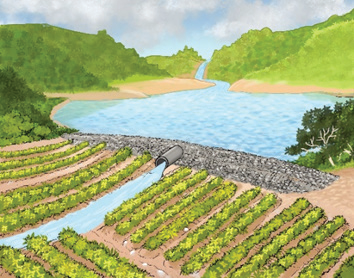
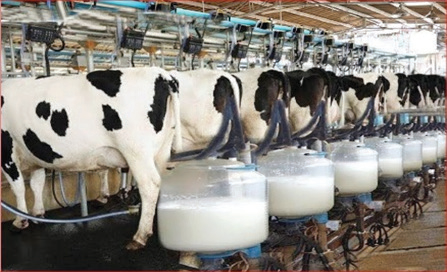

(e)
(f)Figure 1.1(a) - (f): Pictures related to some of the activities carried out in different places
Activity 1.1
Observe the pictures presented in Figures 1.1 (a) to (f) then:
(a) Write down the activity related to or represented in each of the figures.
(b) Write down the meaning of agriculture in relation to the pictures presented in Figures 1.1 (a) to f).
Agriculture is another term for farming. It involves growing and harvesting crops and looking after animals. This work includes caring for crop plants, collecting the crops, preparing them for use, keeping them safe in storage, and selling them. It also includes taking care of animals such as cattle, chickens, bees and fish. The main aim of agriculture is to produce food. This is important because it helps to feed more and more people around the world and it ensures that everyone has enough to eat.
Agriculture is a mixture of science and art. Scientists use science to help farming get better. They come up with new ideas and technologies, for example, using special techniques to improve crops and animals. This means they can develop new varieties of crops and animal breeds that are better. Scientists also use Chemistry knowledge to make fertilisers for plants to grow better by giving them the nutrients they need. Likewise, scientists use Biology and Chemistry to control crop pests and diseases. This means that they use the knowledge about living things and Chemistry to manage and prevent problems associated with diseases and harmful insects that can harm crops and animals.
Farming is not just about science. It also involves using our hands and our brains. This is called the art of farming. For example, when we do physical work on the farm such as building structures or using tools, we are practising the art. We also use our brains to make important decisions. We decide what crops to grow or animals to raise, how much to grow, and how to do it. We also think about when and where to